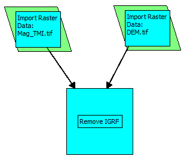
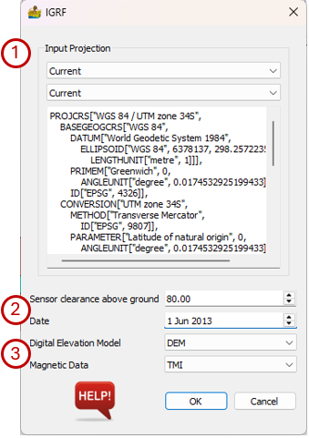
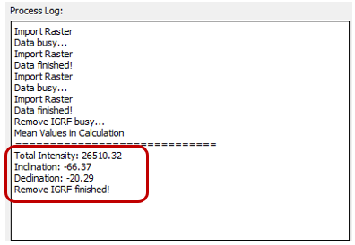

Calculate IGRF Corrected Data¶
This function removes the International Geomagnetic Reference Field (IGRF) from the total magnetic intensity (TMI) data (Alken et al., 2021). It requires, as input, a magnetic dataset and a digital elevation model for an area. The two datasets must be in the same projection. The IGRF correction is a translated version of the correction supplied at: http://www.ngdc.noaa.gov/IAGA/vmod/igrf.html (IGRF Code, n.d.).
The two input datasets must both be connected to the Remove IGRF module. Alternatively, the data can be combined in a multiband raster before removing the IGRF.

The IGRF correction interface requires the following inputs:
Input Projection – Since the IGRF correction relates to latitude and longitude, the projection of the input dataset is required. Under the first dropdown list the Datum can be selected, and the projection is selected under the second dropdown list. If the data sets have projections these will be imported automatically, but the user must confirm that it is correct.
Survey information:
Sensor clearance above ground – the height of the magnetic sensor above the ground in metres.
Date – The magnetic survey date. For large surveys that lasted for multiple or weeks, any date during the survey can be entered since the changes in the geomagnetic field will be negligible on this time scale.
Input data:
Digital Elevation Model – Raster grid of the terrain in height above sea level.
Magnetic Data – Raster grid of the magnetic data to be corrected.

The result of the calculation is a four-band raster dataset with the following bands:
IGRF – The total intensity of the IGRF in nT.
Inclination – The inclination of the IGRF.
Declination – The declination of the IGRF
Magnetic data – The IGRF-corrected magnetic data. The IGRF parameters are included in the band name.
The IGRF parameters are also shown in the Process Log window of the main PyGMI interface

The resulting dataset can be exported by right-clicking on the function and selecting Export Raster.
References¶
IGRF Code (Accessed 28 March, 2014, http://www.ngdc.noaa.gov/IAGA/vmod/igrf.html), originally written in FORTRAN, was developed using subroutines written by A. Zunde (USGS), S.R.C. Malin & D.R. Barraclough (Institute of Geological Sciences, United Kingdom). Translated into C by Craig H. Shaffer. Rewritten by David Owens and maintained by: Stefan Maus (NOAA)